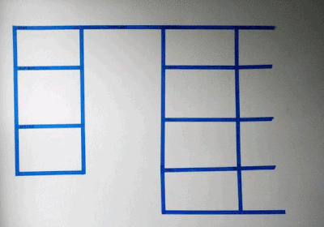

Wyndham Vacation Ownership (Consumer)
Designed the consumer experience for the world's largest vacation ownership company that accommodates more than 900,000 owner families at over 200 resorts worldwide, with processes ranging from comparing resorts and booking vacations to learning about WVO offerings and managing membership accounts.
- Wyndham Vacation Ownership (WVO)
- UX
- Wireframes
- Site Maps
- User Flows
- Interaction Models
Problem
- Timeshare owners at Wyndham Vacation Ownership (WVO) are mostly retired folk and need a customer portal that is organized and easy to use. The existing consumer user interface is outdated and often resorts (hehe...) to its customer service line to support requests and inquiries.
- Thus, WVO's ask was a complete optimization of WVO's consumer user interface (CUI). Having been provided user evaluations/feedback and a project scope of the site's major feature requirements, my team was responsible for analyzing major development components and strategically organizing them into different branches of the site. After establishing this framework, we proceeded to thoughtfully design each functional piece to produce a cohesive and effortless experience.
- The biggest challenge of all was striving to create this simple experience while incorporating WVO's myriad complex business rules. This required constant communication with WVO's product owners and developers to ensure that we had a full grasp on the product requirements and technical feasibility.
- While some of the travel industry's beasts such as Kayak and AirBnB provided good insight into smart design patterns, one of the biggest lessons I learned is that best practices will falter if the design does not align with the business model, especially given WVO's unique program rules and user needs.
Process
- I primarily worked alongside a senior UX designer with oversight from our VP of UX. The full team also included an account manager, a producer, a business analyst, two visual designers, and two developers.
- On the UX end of this 6-month-long project, we underwent 2-week sprints for each major development component. Each sprint began with the client providing feature requirements and associated business rules.
Tasks for each design sprint:
- Problem ExplorationAnalyzed feature requirements, business rules and high-level user needs.
- Information ArchitectureOrganized data and requirements into spreadsheets/matrices, Created sitemaps and userflows.
- Competitive AnalysisExamined best practices and common design patterns for particular features (e.g., resort listings, filtering, sorting, map views, forms).
- Interaction DesignMapped out interaction models and error studies, Translated IA into low-fidelity wireframes.
In this section, I go into detail about my design thinking and decisions while working on one particular feature: the Availability Search Calendar.
WVO's philosophy is that the customer should never reach a dead end while searching for a vacation. While most online travel agencies display only the resorts and rooms that are available for the selected date range, WVO wanted to be very flexible and allow owners to explore options and "just scroll through what's available." Thus, our team designed the availability search to accommodate for a search as general as "Anytime" and "Anywhere".
Challenge: WVO's program-wide rules, resort-specific rules, and the owner's membership type (e.g., Standard vs. VIP Silver) synchronously determine whether or not a selected date range can be booked. For example, a date range selection may be valid for one resort but violates a minimum length of stay requirement for another resort. But since we don't want to block the customer from viewing that invalid resort, we configured the date selection logic as follows:
- Dated Search - follows the standard online travel agency (OTA) practice
- Dateless Search - enables the user to be flexible with dates, locations, and room types
My team adopted an agile design process which entailed daily stand-ups and scrumboarding to visually communicate and allocate responsibilities.
First, we constructed user personas whom we felt would connect with a variety of businesses and benefit from quick access to trustworthy referrals. We then conducted phone interviews with people in our networks who matched these persona types:
- Event planners (i.e., weddings, parties)
- Realtors
- Home owners
- Home inspectors
- Parents with involved children
{kind=link}
In our wireframing process, we initially focused on contriving a captivating hero banner. Making a great first impression is key for any landing page. Below were some of my ideas:
{kind=link}
{kind=link}
These were early wireframe concepts:
{kind=link}
{kind=link}
After several rounds of receiving feedback and redesigning, I designed/coded a responsive site.
Wanna chat?
michaelmyom@gmail.com201-290-4849